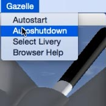

| MENU | ||
|---|---|---|
| Quick Start | Instrumentation | Engine Shutdown |
| Automatic engine starting |
The Gazelle can be started automatically either from the Gazelle menu or by clicking on
the OFF-RUN-INJ selector at the bottom left of the lower instrument console.
This will run through the start sequence including removing the rotor-brake, running up the engine via the starter-generator, igniting the fuel injectors and releasing the ignition to the fuel injectors at the appropriate time. With the engine self-sustaining, the throttle will be advanced and the engine and rotors will then build up to normal operating speed. See Central Warning Panel for sequence and significance of the lights. |
|---|---|
| Central Warning Panel (CWP) | ||
|---|---|---|
|
The Central Warning Panel is positioned at the top-left if the main instrument panel
and is shown here when the aircraft battery power is first applied. During the start sequence,
all these lights should extinguish as the engine and gearbox (main-rotor) speeds build up.
When the last caption has extinguished, the aircraft is just about ready for take off and a few seconds later the rotor-rpm will be at normal operating speed. The captions, in sequence on the panel, are . . |
||
|
||
| Direction Gyro (GyroCompass) |
The heading bug of the Direction Gyro (or gyrocompass, direction indicator)
follows whatever is set in the Autopilot's Heading Bug field (whether
the AP is engaged or not). Just after you start the sim, it will be set to your heading
at that point.
Apart from using the AP dialog, the bug and the AP can be changed together by using the 4/2 keypad keys (for -/+ 1 deg changes) or by using the '(' or ')' bracket keys (for -/+ 10 deg changes). Additionally, if you have heading-hold engaged at the time then the aircraft will also change direction using these keys. |
|---|---|
|
The '+' keypad key can be used to engage heading hold, which will also set the heading bug to the current heading. The homing pointer will set itself to the "next waypoint" selected in the route manager flight plan (if route manager is being used). As you fly over the waypoint it will spin round, much like when navigating via beacons. |
| Radar Altimeter (Rad Alt) | |
|---|---|
|
The Radar Altimeter "DH" (Decision Height) bug is set by tapping the 8 or 2 keypad
keys for Up/Dn. This only works as long as "altitude-hold" or "vertical-speed-hold" are
NOT currently in use. The bug sets the point when the yellow "DH" light comes on/off (top
left of the Rad-Alt instrument).
On the ground, the needle goes behind the panel and the warning flag comes out (and vice-versa). This is not a bug - it's a feature. |
|
| Closing down the Gazelle |
The Gazelle can be shut down automatically either from the Gazelle menu or by clicking on
the OFF-RUN-INJ selector at the bottom left of the lower instrument console. This will shut the aircraft down by cutting off the fuel flow to the engine then, after a venting/cooling period, apply the rotor brake to bring the rotors to a standstill. |
 |
|---|---|